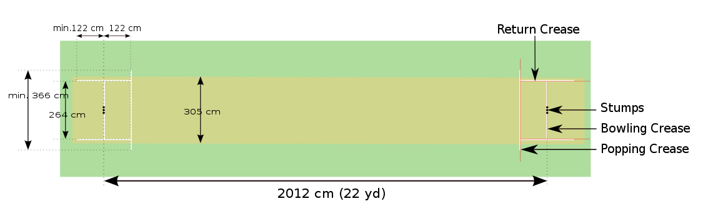

"Cricket" Cricket is a bat-and-ball game played between two teams of eleven players on a field at the centre of which is a 22-yard (20-metre) pitch with a wicket at each end, each comprising two bails balanced on three stumps. The batting side scores runs by striking the ball bowled at one of the wickets with the bat and then running between the wickets, while the bowling and fielding side tries to prevent this (by preventing the ball from leaving the field, and getting the ball to either wicket) and dismiss each batter (so they are "out"). Means of dismissal include being bowled, when the ball hits the stumps and dislodges the bails, and by the fielding side either catching the ball after it is hit by the bat, but before it hits the ground, or hitting a wicket with the ball before a batter can cross the crease in front of the wicket. When ten batters have been dismissed, the innings ends and the teams swap roles. The game is adjudicated by two umpires, aided by a third umpire and match referee in international matches. They communicate with two off-field scorers who record the match's statistical information.
Forms of cricket range from Twenty20 (also known as T20), with each team batting for a single innings of 20 overs (each "over" being a set of 6 fair opportunities for the batting team to score) and the game generally lasting three to four hours, to Test matches played over five days. Traditionally cricketers play in all-white kit, but in limited overs cricket they wear club or team colours. In addition to the basic kit, some players wear protective gear to prevent injury caused by the ball, which is a hard, solid spheroid made of compressed leather with a slightly raised sewn seam enclosing a cork core layered with tightly wound string.The earliest reference to cricket is in South East England in the mid-16th century. It spread globally with the expansion of the British Empire, with the first international matches in the second half of the 19th century. The game's governing body is the International Cricket Council (ICC), which has over 100 members, twelve of which are full members who play Test matches. The game's rules, the Laws of Cricket, are maintained by Marylebone Cricket Club (MCC) in London. The sport is followed primarily in South Asia, Australia, New Zealand, the United Kingdom, Southern Africa and the West Indies.
Cricket is one of many games in the "club ball" sphere that basically involve hitting a ball with a hand-held implement; others include baseball (which shares many similarities with cricket, both belonging in the more specific bat-and-ball games category[2]), golf, hockey, tennis, squash, badminton and table tennis.[3] In cricket's case, a key difference is the existence of a solid target structure, the wicket (originally, it is thought, a "wicket gate" through which sheep were herded), that the batter must defend.[4] The cricket historian Harry Altham identified three "groups" of "club ball" games: the "hockey group", in which the ball is driven to and from between two targets (the goals); the "golf group", in which the ball is driven towards an undefended target (the hole); and the "cricket group", in which "the ball is aimed at a mark (the wicket) and driven away from it".It is generally believed that cricket originated as a children's game in the south-eastern counties of England, sometime during the medieval period.[4] Although there are claims for prior dates, the earliest definite reference to cricket being played comes from evidence given at a court case in Guildford in January 1597 (Old Style, equating to January 1598 in the modern calendar). The case concerned ownership of a certain plot of land and the court heard the testimony of a 59-year-old coroner, John Derrick, who gave witness that:Being a scholler in the free school of Guldeford hee and diverse of his fellows did runne and play there at creckett and other plaies.
Although the main object of the game has always been to score the most runs, the early form of cricket differed from the modern game in certain key technical aspects; the North American variant of cricket known as wicket retained many of these aspects.[14] The ball was bowled underarm by the bowler and along the ground towards a batter armed with a bat that in shape resembled a hockey stick; the batter defended a low, two-stump wicket; and runs were called notches because the scorers recorded them by notching tally sticks.In 1611, the year Cotgrave's dictionary was published, ecclesiastical court records at Sidlesham in Sussex state that two parishioners, Bartholomew Wyatt and Richard Latter, failed to attend church on Easter Sunday because they were playing cricket. They were fined 12d each and ordered to do penance.[18] This is the earliest mention of adult participation in cricket and it was around the same time that the earliest known organised inter-parish or village match was played – at Chevening, Kent.[6][19] In 1624, a player called Jasper Vinall died after he was accidentally struck on the head during a match between two parish teams in Sussex.
According to the social historian Derek Birley, there was a "great upsurge of sport after the Restoration" in 1660.[25] Several members of the court of King Charles II took a strong interest in cricket during that era.[26] Gambling on sport became a problem significant enough for Parliament to pass the 1664 Gambling Act, limiting stakes to £100 which was, in any case, a colossal sum exceeding the annual income of 99% of the population.[25] Along with horse racing, as well as prizefighting and other types of blood sport, cricket was perceived to be a gambling sport.[27] Rich patrons made matches for high stakes, forming teams in which they engaged the first professional players.[28] By the end of the century, cricket had developed into a major sport that was spreading throughout England and was already being taken abroad by English mariners and colonisers – the earliest reference to cricket overseas is dated 1676.[29] A 1697 newspaper report survives of "a great cricket match" played in Sussex "for fifty guineas apiece" – this is the earliest known contest that is generally considered a First Class match.Cricket remained a low-key local pursuit for much of the 17th century.[10] It is known, through numerous references found in the records of ecclesiastical court cases, to have been proscribed at times by the Puritans before and during the Commonwealth.[21][22] The problem was nearly always the issue of Sunday play as the Puritans considered cricket to be "profane" if played on the Sabbath, especially if large crowds or gambling were involved.
Cricket is a bat-and-ball game played on a cricket field (see image, right) between two teams of eleven players each.[64] The field is usually circular or oval in shape and the edge of the playing area is marked by a boundary, which may be a fence, part of the stands, a rope, a painted line or a combination of these; the boundary must if possible be marked along its entire length.In the approximate centre of the field is a rectangular pitch (see image, below) on which a wooden target called a wicket is sited at each end; the wickets are placed 22 yards (20 m) apart.[66] The pitch is a flat surface 10 feet (3.0 m) wide, with very short grass that tends to be worn away as the game progresses (cricket can also be played on artificial surfaces, notably matting). Each wicket is made of three wooden stumps topped by two bails.
As illustrated above, the pitch is marked at each end with four white painted lines: a bowling crease, a popping crease and two return creases. The three stumps are aligned centrally on the bowling crease, which is eight feet eight inches long. The popping crease is drawn four feet in front of the bowling crease and parallel to it; although it is drawn as a twelve-foot line (six feet either side of the wicket), it is, in fact, unlimited in length. The return creases are drawn at right angles to the popping crease so that they intersect the ends of the bowling crease; each return crease is drawn as an eight-foot line, so that it extends four feet behind the bowling crease, but is also, in fact, unlimited in length.
Of the eleven fielders, three are in shot in the image above. The other eight are elsewhere on the field, their positions determined on a tactical basis by the captain or the bowler. Fielders often change position between deliveries, again as directed by the captain or bowler.If a fielder is injured or becomes ill during a match, a substitute is allowed to field instead of him, but the substitute cannot bowl or act as a captain, except in the case of concussion substitutes in international cricket.[73] The substitute leaves the field when the injured player is fit to return.The Laws of Cricket were updated in 2017 to allow substitutes to act as wicket-keepers.
Most bowlers are considered specialists in that they are selected for the team because of their skill as a bowler, although some are all-rounders and even specialist batters bowl occasionally. The specialists bowl several times during an innings but may not bowl two overs consecutively. If the captain wants a bowler to "change ends", another bowler must temporarily fill in so that the change is not immediate.A bowler reaches his delivery stride by means of a "run-up" and an over is deemed to have begun when the bowler starts his run-up for the first delivery of that over, the ball then being "in play".Fast bowlers, needing momentum, take a lengthy run up while bowlers with a slow delivery take no more than a couple of steps before bowling. The fastest bowlers can deliver the ball at a speed of over 145 kilometres per hour (90 mph) and they sometimes rely on sheer speed to try to defeat the batter, who is forced to react very quickly.[88] Other fast bowlers rely on a mixture of speed and guile by making the ball seam or swing (i.e. curve) in flight. This type of delivery can deceive a batter into miscuing his shot, for example, so that the ball just touches the edge of the bat and can then be "caught behind" by the wicket-keeper or a slip fielder.
Cricket has had a broad impact on popular culture, both in the Commonwealth of Nations and elsewhere. It has, for example, influenced the lexicon of these nations, especially the English language, with various phrases such as "that's not cricket" (that's unfair), "had a good innings" (lived a long life) and "sticky wicket". "On a sticky wicket" (aka "sticky dog" or "glue pot")[145] is a metaphor[146] used to describe a difficult circumstance. It originated as a term for difficult batting conditions in cricket, caused by a damp and soft pitch.Cricket has close historical ties with Australian rules football and many players have competed at top levels in both sports.[153] In 1858, prominent Australian cricketer Tom Wills called for the formation of a "foot-ball club" with "a code of laws" to keep cricketers fit during the off-season. The Melbourne Football Club was founded the following year, and Wills and three other members codified the first laws of the game.[154] It is typically played on modified cricket fields.In England, a number of association football clubs owe their origins to cricketers who sought to play football as a means of keeping fit during the winter months. Derby County was founded as a branch of the Derbyshire County Cricket Club in 1884;[156] Aston Villa (1874) and Everton (1876) were both founded by members of church cricket teams.[157] Sheffield United's Bramall Lane ground was, from 1854, the home of the Sheffield Cricket Club, and then of Yorkshire; it was not used for football until 1862 and was shared by Yorkshire and Sheffield United from 1889 to 1973.